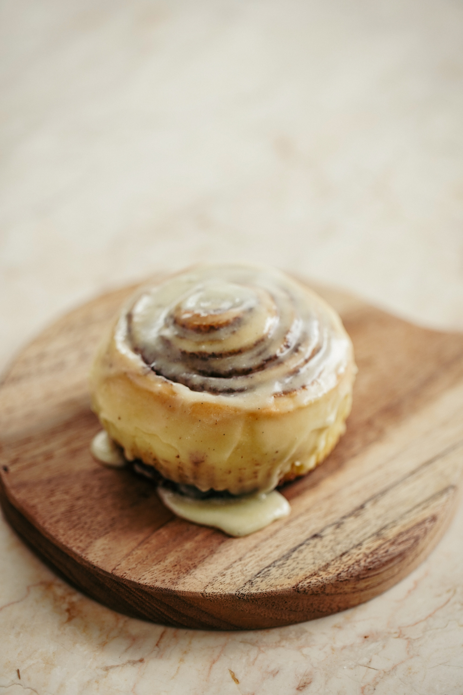

Sticky Buns Recipe

Description
Famous in my family and always looked forward to when being prepared by my grandmother. My father demands that it
is made for his birthday breakfast each year. Best enjoyed warm out of the oven.
Ingredients
- 2 (.25 ounce) packages quick-rising yeast (such as Fleischmann's RapidRise®)
- ½ cup lukewarm water
- 4½ cups sifted all-purpose flour
- 2 eggs, beaten
- ½ cup warm milk
- ½ cup white sugar
- ½ cup butter, melted
- 1 teaspoon salt
Toppings
- ¾ cup brown sugar
- ½ cup butter
- 3 tablespoons honey
- 1 tablespoon light corn syrup
- 1 cup raisins (Optional)
- 1 cup walnuts (Optional)
Fillings
- ¼ cup butter, melted
- ¾ cup white sugar
- 2 teaspoons ground cinnamon
- 1 cup raisins (Optional)
Directions
- Dissolve yeast in lukewarm water in a large bowl. Set aside for 5 minutes. Stir flour, eggs, warm milk, 1/2
cup white sugar, 1/2 cup melted butter, and salt into the yeast and water until the mixture is a moist and
sticky dough.
- Put dough in a greased bowl and cover with a wet towel. Set aside in a warm place until dough doubles in
size and holes poked into dough with a finger stay indented, about 1 1/2 to 2 1/2 hours.
- Stir brown sugar, 1/2 cup butter, honey, and corn syrup together in a saucepan over medium heat; cook,
stirring occasionally, until the sugar dissolves. Pour the topping mixture into the bottom of 2 9x13-inch
non-stick baking dishes. Sprinkle 1 cup raisins and walnuts evenly onto the topping mixture.
- Punch down dough and roll into a rectangle shape 1/4 to 1/2-inch thick.
- Brush 1/4 cup melted butter over the dough rectangle. Stir 3/4 cup white sugar and cinnamon together in a
small bowl; sprinkle over the butter. Sprinkle 1 cup raisins evenly over the dough. Roll dough around the
filling into a cylinder; cut into 3/4-inch slices and arrange into the baking dishes. Set aside to rest for
20 minutes or up to overnight in the refrigerator.
- Preheat oven to 375 degrees F (190 degrees C).
- Bake rolls in preheated oven until no longer doughy in the middle, about 25 minutes. Immediately flip onto a
serving platter, transferring topping onto rolls, and serve warm.
Nutrition Facts
Per Serving: 398 calories; protein 5.6g; carbohydrates 60.1g; fat 16.4g; cholesterol 49.6mg;
sodium 213.6mg.